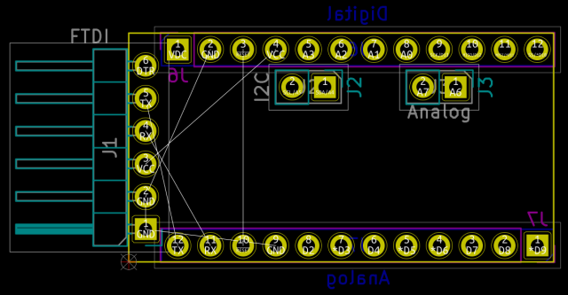

This template forms the basis for a board with the same layout as the Arduino Pro Mini, including the appropriate board outline and header locations.
Note: this template is not a shield. Rather, it is intended for those who want to design a board that has the same footprint as an Arduino Pro Mini.

(c) 2021 Caleb Reister